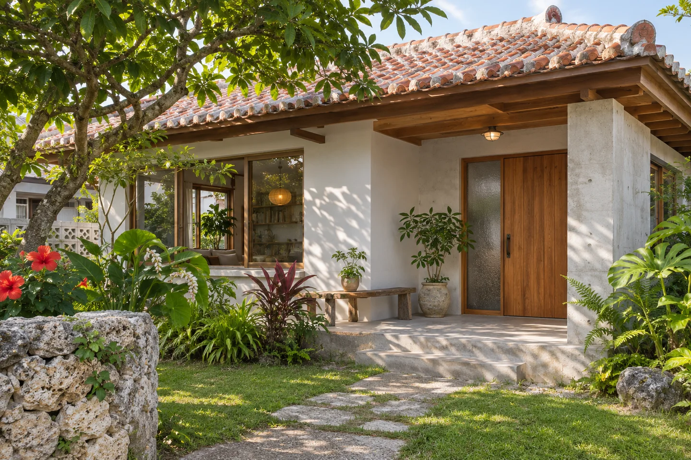

About & contact
どんな暮らしを、
つくりたいですか。
話しながら、住まいの希望を整理するための小さなスタジオを想定しています。

Our approach
大きく変える前に、
困っていることを知る。
TANEは、家を新しくすることだけでなく、今の暮らしをよく見ることから始めるスタジオとして構成しています。
掲載している人物・住所・会社情報はありません。実際の会社案内として使う場合は、担当者の紹介、対応エリア、施工体制などを確認して掲載する想定です。
このスタジオ・サービス・事例は架空の制作サンプルです。
Inquiry form demo
住まいの相談
画面の動きを試せるデモフォームです。入力内容は保存・送信されません。
Frequently asked
よくあるご質問
掲載されている施工事例は実際の工事ですか？
いいえ。ポートフォリオ用の架空の施工イメージです。
相談フォームを使えますか？
このデモでは入力内容は送信されません。実際のサイトでは連絡手段や保存先に合わせて設定します。